22 monuments
Tous les bâtiments
Explorez chaque édifice en détail : son histoire, son style, ses dates clés et son illustration.
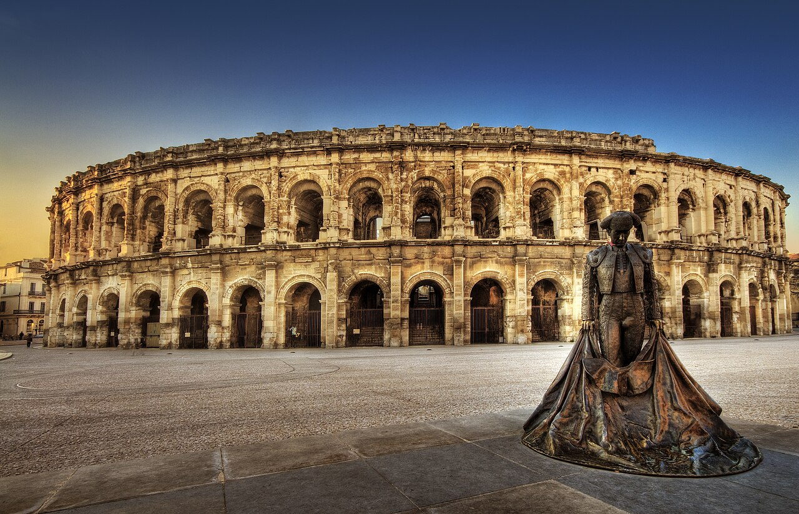
Antiquité gallo-romaine
Arènes de Nîmes
Nîmes, Gard

Antiquité gallo-romaine
Pont du Gard
Vers-Pont-du-Gard, Gard
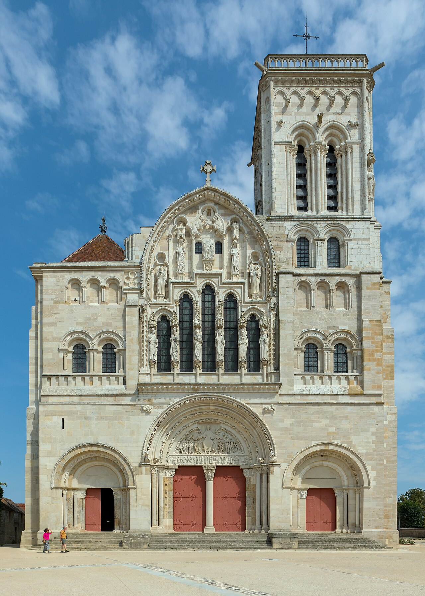
Art roman
Basilique Sainte-Marie-Madeleine
Vézelay, Yonne
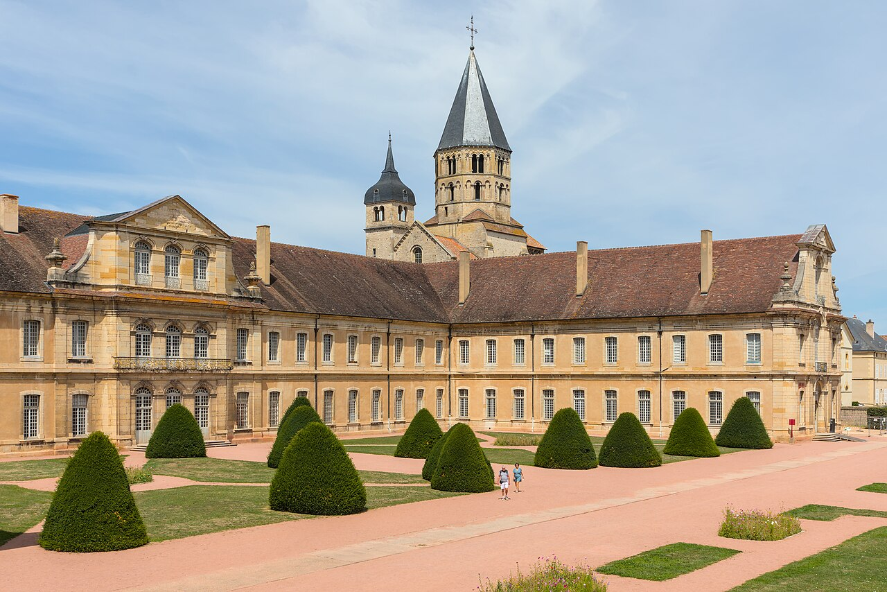
Art roman
Abbaye de Cluny
Cluny, Saône-et-Loire
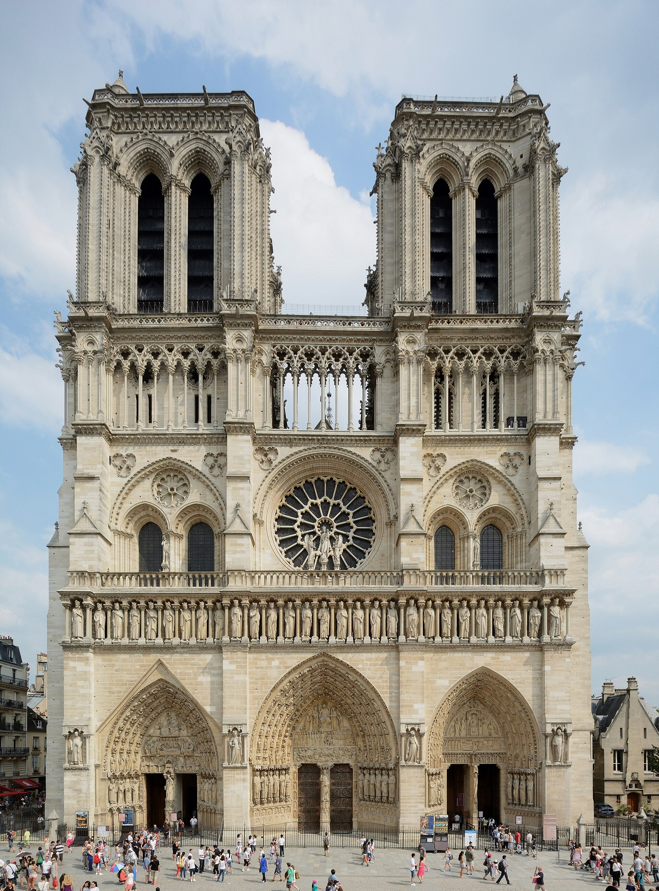
Gothique
Cathédrale Notre-Dame de Paris
Paris
Gothique
Cathédrale de Chartres
Chartres, Eure-et-Loir
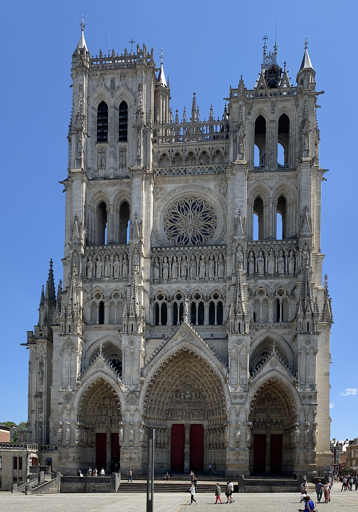
Gothique
Cathédrale Notre-Dame d'Amiens
Amiens, Somme

Renaissance
Château de Chambord
Chambord, Loir-et-Cher
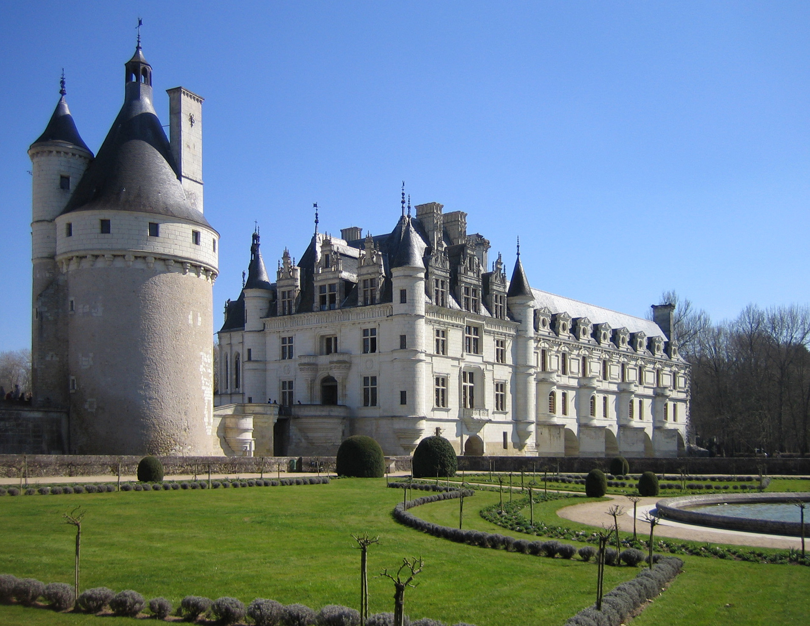
Renaissance
Château de Chenonceau
Chenonceaux, Indre-et-Loire

Classicisme & Baroque
Château de Versailles
Versailles, Yvelines

Classicisme & Baroque
Les Invalides
Paris
Néoclassicisme
Le Panthéon
Paris

Néoclassicisme
Arc de Triomphe
Paris
Haussmannien
Les immeubles haussmanniens
Paris et grandes villes
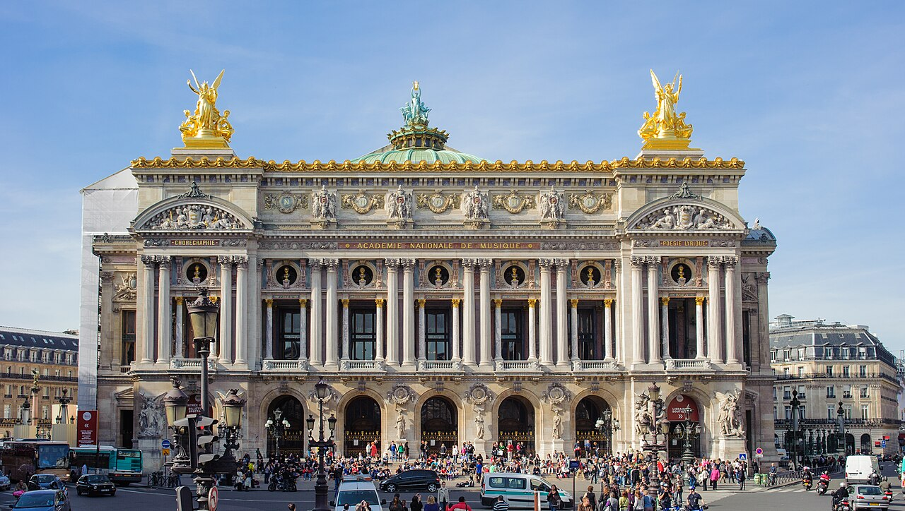
Haussmannien
Opéra Garnier
Paris
Art nouveau
Entrées du métropolitain
Paris
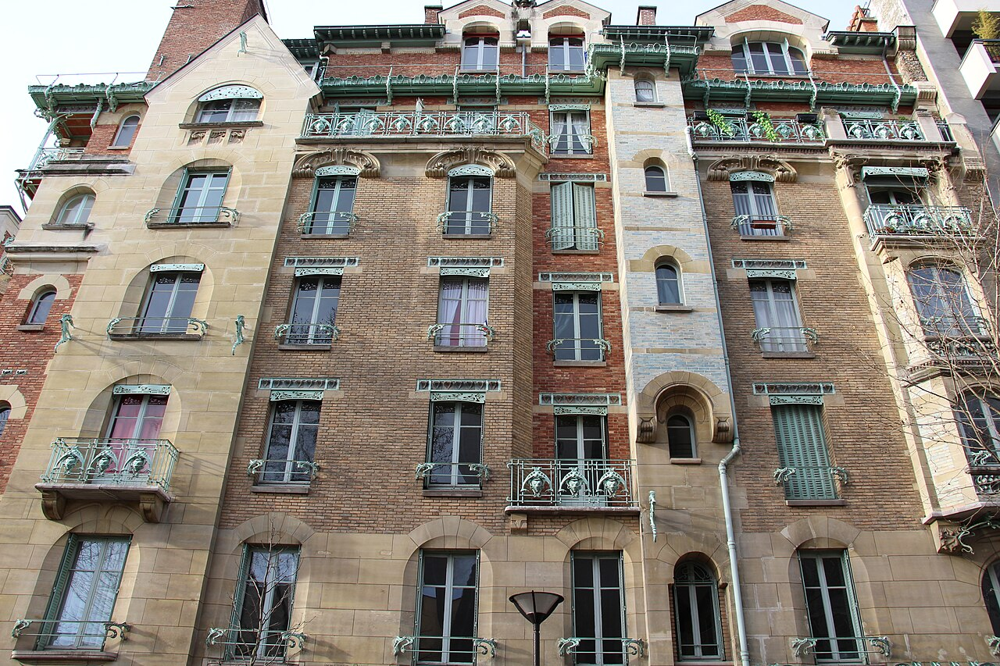
Art nouveau
Castel Béranger
Paris, 16e arrondissement
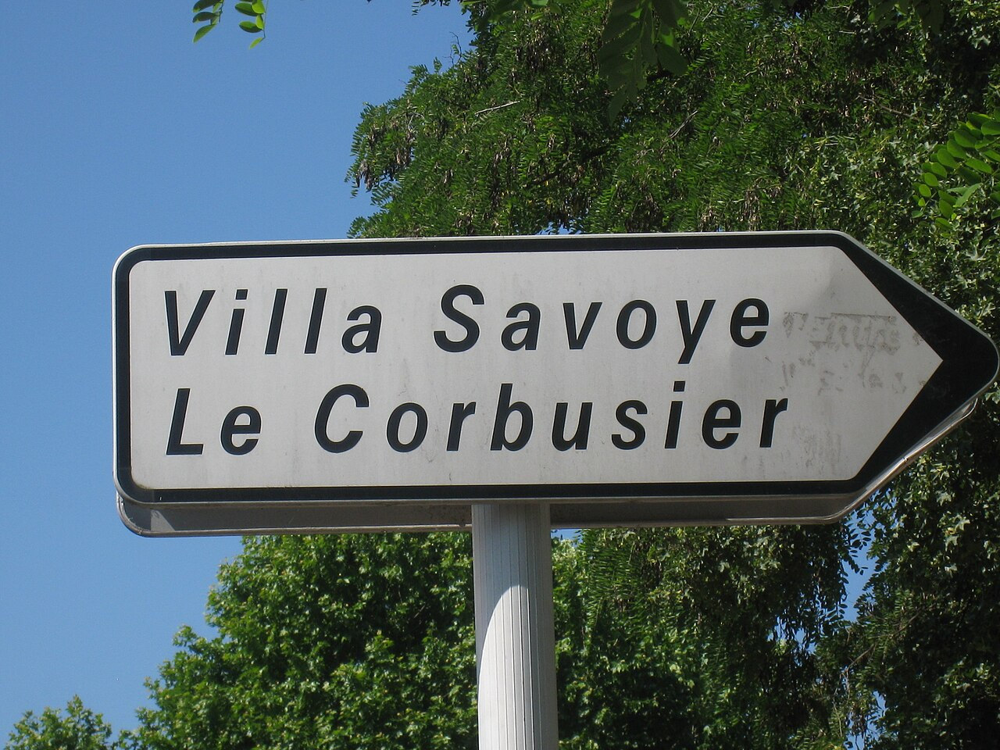
Moderne & Art déco
Villa Savoye
Poissy, Yvelines
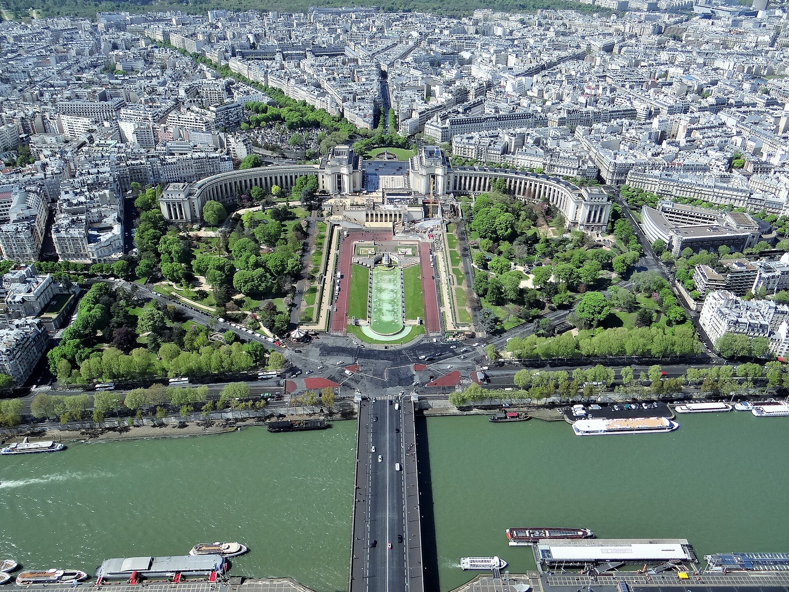
Moderne & Art déco
Palais de Tokyo & Palais de Chaillot
Paris
Contemporain
Centre Pompidou
Paris
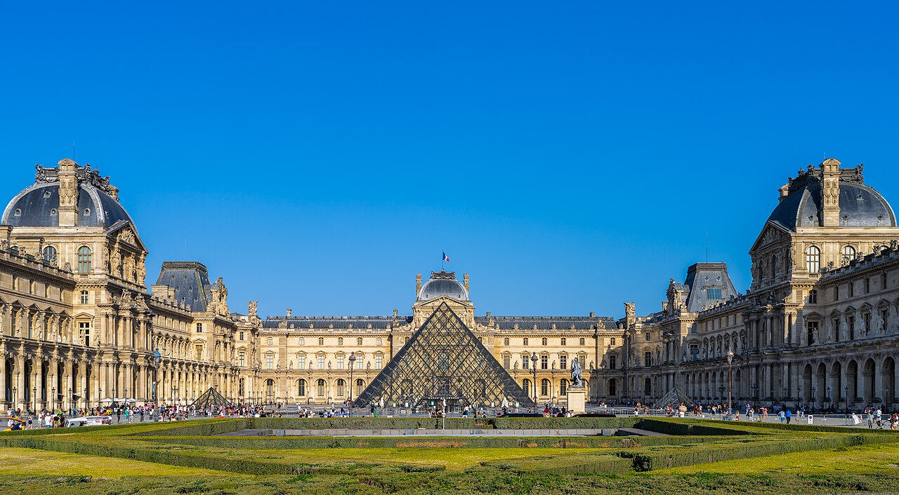
Contemporain
Pyramide du Louvre
Paris
Contemporain
Fondation Louis Vuitton
Paris, Bois de Boulogne